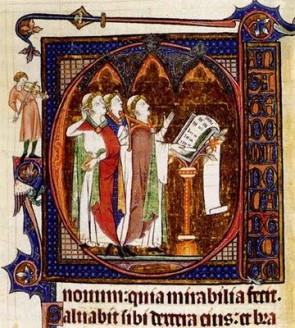
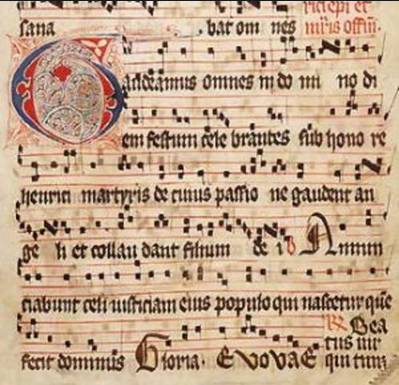

La gran influencia de la iglesia católica durante la edad media no solo se ve cultural, política, económica o militarmente.
Durante este periodo se empieza a notar una diferencia entre la música académica (aquella que se enseñaba de forma oficial
en las escuelas de música tradicionales) y la música popular (música dirigida al pueblo); Durante los rituales católicos
era común el acompañamiento de coros compuesto por varias voces masculinas, estos coros cantaban totalmente a cappella,
teniendo solo una linea melódica y con una lírica exclusivamente en latín.

Un fenómeno común, herencia de la cultura romana, era el uso de los "castrati", estos eran hombres castrados desde niños
para que así conservaran su voz aguda y así poder interpretar voces típicas de mujeres. Otro hecho notable de la época
es la invención del tetragrama, una forma de notación musical predecesora del pentagrama usado actualmente, esto f
acilito la escritura musical, ya que los anteriores sistemas no tenían referencias de tiempos o no definían con
exactitud los tonos, lo que hacia necesario el conocimiento previo de la pieza musical para poder interpretarla.

Por otro lado la "estampie" representaba la música no-eclesiástica, la música popular; EL origen de esta es francés aunque
se extendió al resto de Europa, en Francia se hablaba primero de los trovadores (al sur de Francia) y de los troveros
(surgieron poco tiempo después, recorriendo el norte de Francia), estos artistas se caracterizaban por ir de pueblo en
pueblo contando historias a través de sus canciones, a diferencia de la música eclesiástica las letras estaban escritas
en lenguas romance dependiendo de la que se hablara por el pueblo de cada región, esto con el fin de que la gente del
común (sin conocimientos de latín) fueran capaces de entender las canciones. la "estampie" podía ser una canción con un
pequeño acompañamiento o netamente instrumental, usando un instrumento de cuerda y uno de percusión. La "estampie" era
una música de baile, con letras no necesariamente religiosa las cuales podían ser de amor, noticias, o a modo de
transmisión de historias.